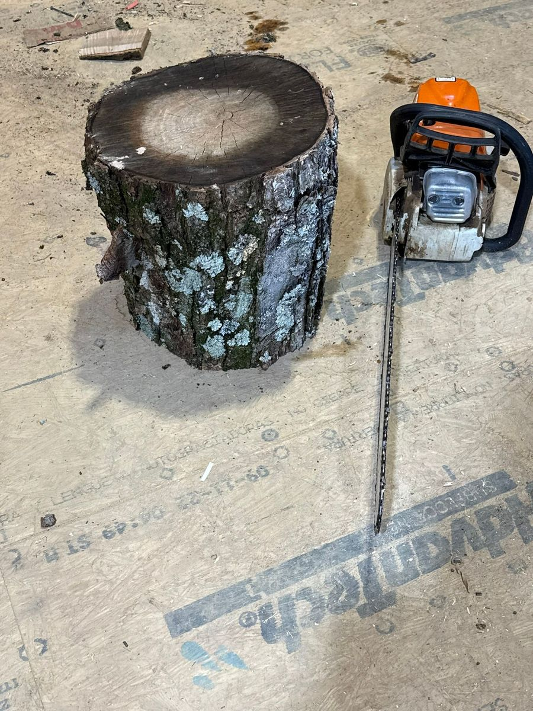
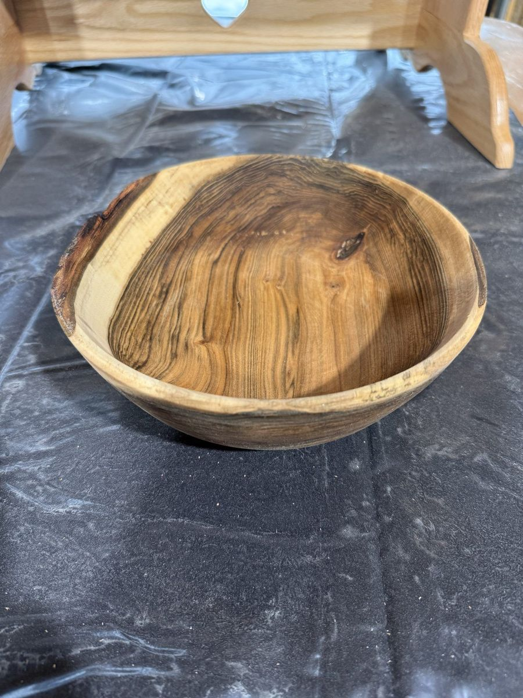

In the fall of 2024, a 60-foot black walnut came down during a storm in a backyard just outside Gambier. The homeowners didn't want firewood. They wanted to know if the tree could become something else. A year and a half later, a piece of that tree sits on a kitchen counter as a finished bowl. Here's what happened in between.
Step 1: Reading the log
When I pulled up with the trailer, the trunk had already been cut into four-foot sections. Black walnut (Juglans nigra) is one of the most prized hardwoods in Ohio — dark chocolate heartwood, a creamy pale sapwood edge, and a grain that can range from straight and quiet to wild and figured. The trick is knowing what you're looking at before the chainsaw comes out.
I spent the first half hour just walking around the sections, looking for the best bowl blanks. Crotches — where a branch meets the trunk — often have the most dramatic figure. The lower trunk tends to have the densest, most stable grain. Knots can be beautiful or disastrous, depending on whether the wood around them has tension in it.
Step 2: Rough turning while wet
This is the part that surprises people. Instead of letting the log dry out completely before I touch it, I turn each bowl blank while it's still wet — full of sap, sometimes dripping. Wet wood is soft, cuts like cheese, and throws a satisfying spray of shavings off the lathe. I turn the bowl oversized, with walls roughly an inch thick, knowing the wood is going to move as it dries.
This is called rough turning, and it's about 90% of the final shape. The rough-turned blank goes into a paper bag filled with the wet shavings from the cut, or sometimes into a box of anhydrous lanolin. Both slow the drying down so the bowl doesn't crack as it shrinks.
Step 3: The long wait
Here's the part no tutorial video ever shows: nothing. For the next nine to twelve months, the rough-turned bowl just sits on a shelf. Walnut loses moisture slowly — about an inch of thickness per year as a rough rule — and as it does, the bowl changes shape. What started as a round form becomes oval. The rim dips. The wood remembers it used to be a tree.
I weigh each rough bowl when I shelve it and write the weight on masking tape stuck to the side. Once the weight stops dropping — usually when the wood hits around 8–12% moisture content, matching the humidity inside a typical home — I know it's ready.
Kiln drying is faster but introduces more stress into the wood. For bowls, I almost always air dry. A walnut bowl roughed out in October is usually ready to finish-turn sometime the following summer.
Step 4: The second turning
This is where the magic happens. I mount the now-dry, slightly warped bowl back on the lathe and re-true it — taking the oval back to round, cleaning up the surface, and bringing the walls down to final thickness. Because the wood is now dry and stable, it can be cut fine and clean. This is where the grain really shows up for the first time: the chatoyance of the walnut, the transition between sapwood and heartwood, any figure that was hidden in the rough surface.
Finish turning takes a fraction of the time rough turning did — maybe two hours for a medium bowl. But it's the part that makes or breaks the piece.

Step 5: Sanding and finishing
Sanding runs through a progression of grits — usually 120, 180, 220, 320, sometimes up to 400 — with the lathe spinning, then stopped, then spinning the other direction. Any scratch left by a lower grit will show up under the finish, so the discipline matters.
For food-safe bowls, I use a mineral oil and beeswax blend. Several coats, wet-sanded in between on the final pass, then buffed. The wood drinks the first coat like it hasn't seen water in a year. The grain lights up. What was flat suddenly has depth.
Why it's worth the wait
You can buy a wooden bowl for $15 at any home store. It was turned on a machine, from plantation-grown wood, in a country you'll never visit, and finished in a spray booth. It looks fine. It works fine. It is, in every meaningful way, a disposable object.
A bowl that started as a fallen walnut in Knox County and took eighteen months to become what it is — that's a different thing. It holds the story of the tree. It shows where the grain swirled around an old branch. The sapwood edge marks the year the tree stopped growing. When you hand it to your grandchild in forty years, the wood will still be there, still doing its job, still telling that story.
That's why we wait.